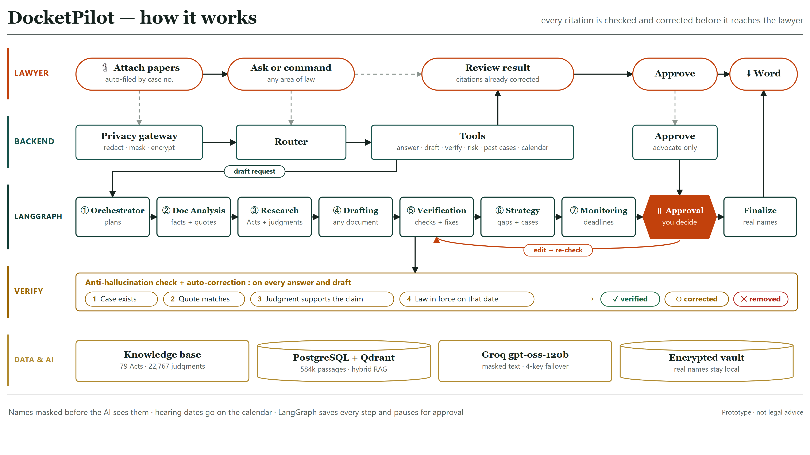
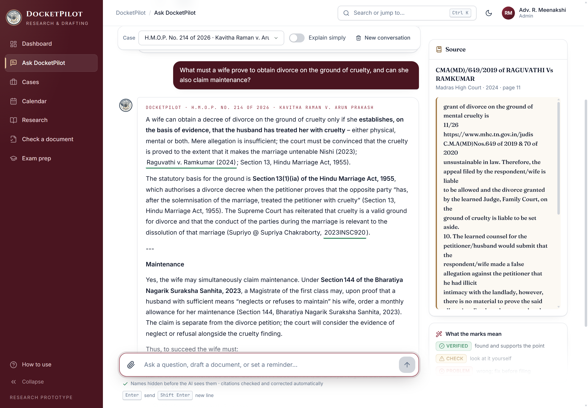
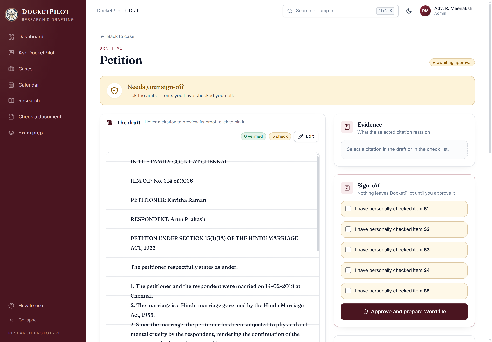
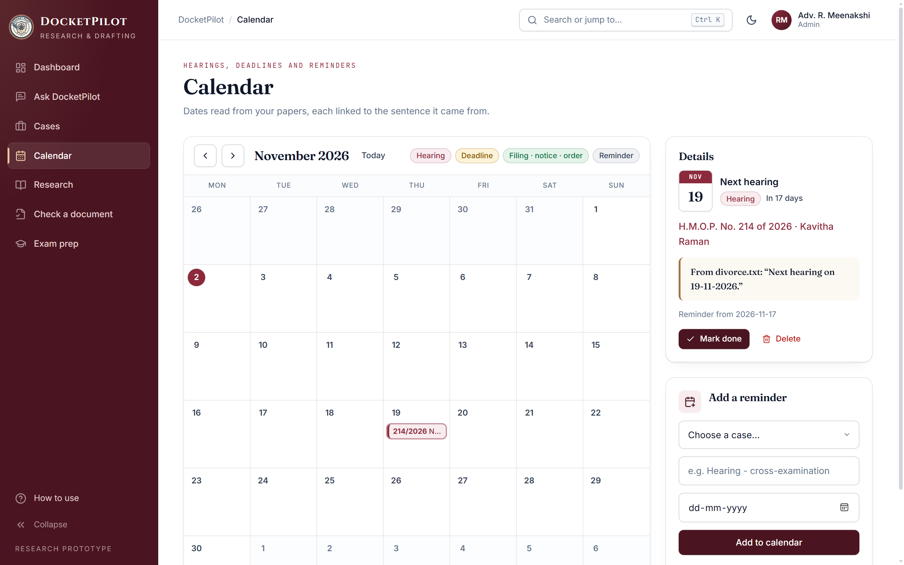
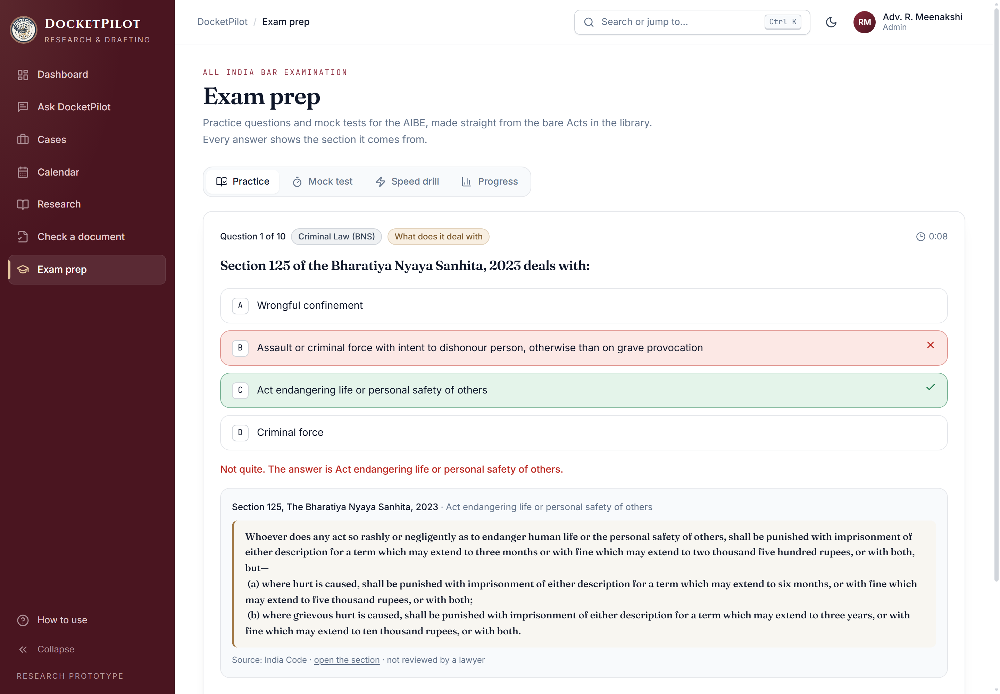

Seven agents, one rule: nothing unverified reaches the lawyer

LangGraph runs the agents as a stateful graph that checkpoints every step and pauses for the lawyer's approval. Names are masked before any model call; real names return only in the approved Word file.
Every citation, four checks
A wrong citation to a real case is replaced with the correct one; an invented or unsupported one is removed with the sentence that relied on it.
Every layer is needed
Giving the model real sources raised misattribution: it attaches true cases to claims they do not make. Only checking after generation removed both failures.
Hybrid search finds the right judgment
Recall@5, bars drawn on a 0–100% scale.
The AI never sees a client's name
RESPONDENT: Mr. Arun Prakash
Married on 14-02-2019 at Chennai.
RESPONDENT: Mr. PERSON_2
Married on 14-02-2019 at ORG_1.
- Names, Aadhaar, PAN, phones and addresses masked by rules and spaCy NER; real names kept in an encrypted vault.
- Plus security headers, upload checks and an append-only audit log.
From a legal question to a signed-off draft

Ask. Answers drawn from judgments and Acts, citations underlined and checked.

Draft. Any legal document, with real names and the lawyer's sign-off.

Track. Hearing dates read from the papers go straight to the calendar.

Learn. AIBE practice built from the bare Acts, with no AI call.
Built from public, official sources
Judgments: AWS Open Data Registry (CC-BY-4.0), from the eCourts portal. Acts: India Code.